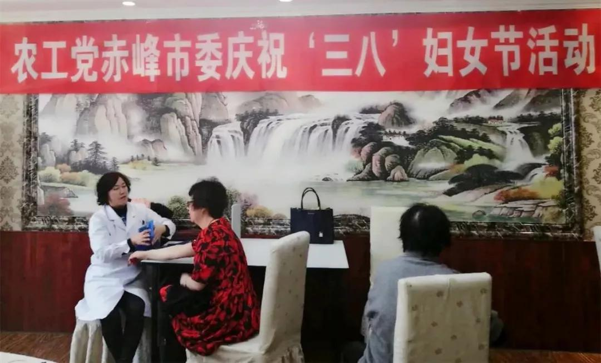

2018年3月10日，农工党赤峰市委员会举办了庆祝“三.八”国际劳动妇女节活动。
活动组织广大女党员们学习讨论了习近平总书记在3月5日参加内蒙古代表团审议时的重要讲话精神。党员们纷纷表示，一定充分发挥妇女半边天的作用，不忘初心、牢记使命，立足本职、心系农工，为振兴乡村战略、打赢赤峰市脱贫攻坚战献计出力。
隗春华副主委代表农工党赤峰市委向赤峰市广大农工党女党员致以亲切的节日问候，感谢自尊、自强、自信、自立的女同胞们在过去一年里奉献爱心、发挥优势、立足本职、积极进取，为农工党各项工作给予的无私奉献和辛劳付出。希望女同胞们在家庭中尊老爱幼、勤俭持家、邻里团结，在本职工作中勇于争先、再创佳绩，在多党合作事业中认真履行职责、积极建言献策，并坚持学习，充实自己，做有理想、有道德的新时代女性，为新目标奋斗，在新征程建功。

此次活动还为26名女党员进行了中医诊脉和乳腺筛查。